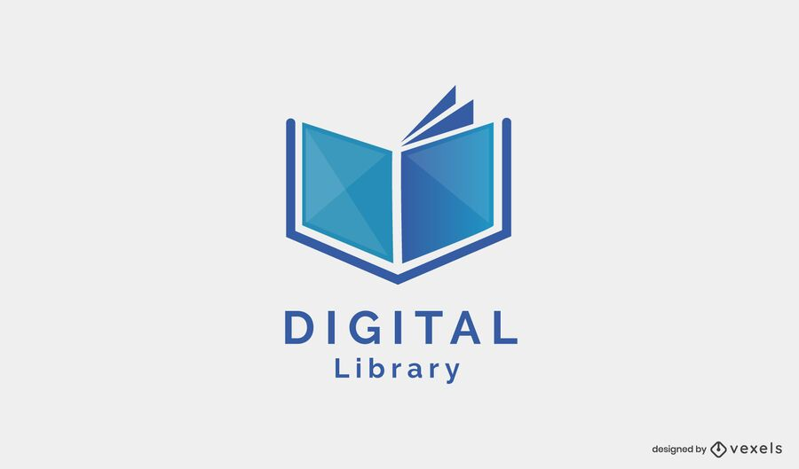

A digital library management system streamlines the storage, organization, and access to digital resources, making it easier for users to find and utilize digital materials. It offers efficient cataloging and user management features, enhancing the management of digital collections in various institutions.

The ATM Interface is a Python-based application for simulating ATM operations. It allows users to check account balances, make deposits, and withdraw cash via a user-friendly command-line interface. This project is ideal for educational purposes and basic ATM system simulations.The ATM Interface is a Python-based application for simulating ATM operations. It allows users to check account balances, make deposits, and withdraw cash via a user-friendly command-line interface. This project is ideal for educational purposes and basic ATM system simulations.
The Online Examination System is a web-based platform for conducting and managing assessments over the internet, providing a user-friendly environment for test-takers and administrators. It simplifies exam creation, delivery, and grading, making it a valuable solution for educational institutions and organizations seeking efficient online assessment tools.
Temperature Analysis involves the study and interpretation of temperature-related data to gain insights into climate trends, weather patterns, and environmental changes. It plays a vital role in fields like meteorology, ecology, and urban planning, providing valuable information for research and decision-making.

A Quiz Program is an interactive software that quizzes users on different topics, providing a fun and educational way to test knowledge and learn new facts. Users can select quizzes, answer questions, and receive scores or feedback, making it a versatile tool for learning and assessment.